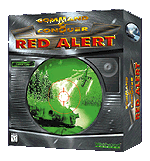
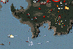

Command & Conquer: Red Alert
by Westwood Studios
 | (out of 5) |
Price: $54.95
Type of game: real-time, combat, strategy
Platforms: Windows 95, DOS, Mac

Command & Conquer, released in 1995, gave players the chance to construct and control modern combat facilities, vehicles and troops which were then led against opposing forces in "real-time" rather than on a turn-by-turn basis. If you played--and enjoyed--Command & Conquer, you will be happy to know that Westwood has made only minor modifications to the original game engine for Command & Conquer: Red Alert.
The storyline of Red Alert has been referred to as a "prequel" to Command & Conquer, but may also be thought of as an "alternate universe." It would appear that someone has developed time travel and managed to take a young Adolph Hitler "out of the picture." As a result, Stalin's power is never challenged, World War II never occurs, and the U.S. is never brought into the Allied Forces. Now, in an off-kilter present, Soviet expansion has begun, along with the race to develop the "atom" bomb.
Besides this enigmatic new story line (part of the fun is getting to the bottom of the story), a brand new set of troops and units is available to the Allied Forces and the Soviet army. Some of the annoying idiosyncrasies of the original program have been changed as well (i.e. no more loading troops into troop carriers one at a time). The missions themselves also take on a new feel as sub-goals are added. Each goal must be met before the next directive is announced. Many of the goals involve completing a task before the end of a countdown (making life difficult for those of us who like to sit back and amass a huge invasion force).
 For Windows 95, new SVGA graphics have been added, giving you sharper images and an enlarged view of the battlefield. Westwood's chat software is included with Red Alert, allowing users to log onto an IRC-based chat network. Players can then swap IP addresses and square off against each other. Only two players are supported by this method, but by using Internet gaming services such as Ten (for a fee), more players can participate.
{kind=link}
If you've never played Command & Conquer, but you think that a fast paced strategy game might interest you, definitely try Red Alert. Fans of Command & Conquer be warned: it is as addictive as the original, but much more difficult! A single mistake early in a mission may mean failure in the end, so save often.
Warnings and tech stuff:
- As in its precursor, there are some gruesome depictions of battlefield violence.
- Both DOS and Windows 95 version are shipped on the disks. Older PCs running Windows 95 may not be able to run the Windows 95 version--depending on the video card--but will still be able to run the lower-res DOS version (I was unable to run the Win 95 version on my 4 year old Ark Logic video card here at the office).
- Windows 95 version allows for a painless installation of the game for those of us who like to avoid DOS.
For more information on Command & Conquer: Red Alert, check out Westwood's official site at http://208.196.158.42/redalert/.